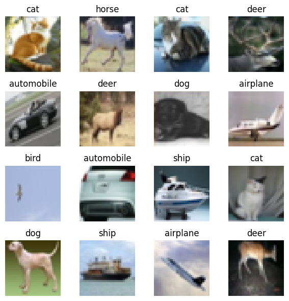
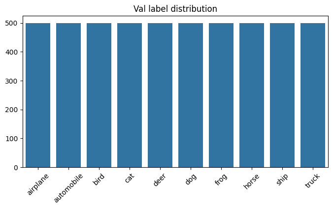
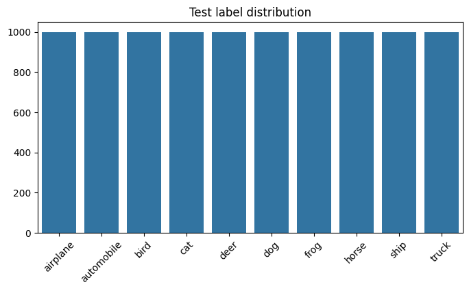
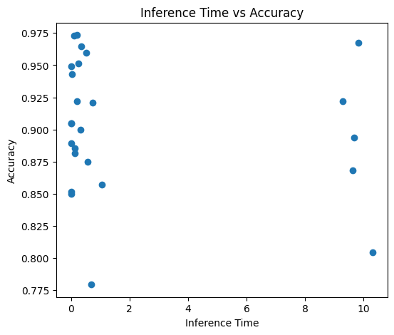
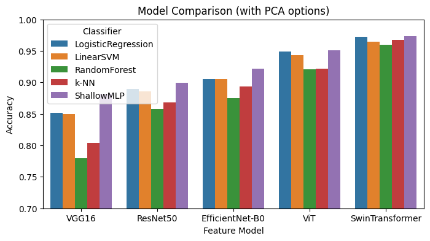
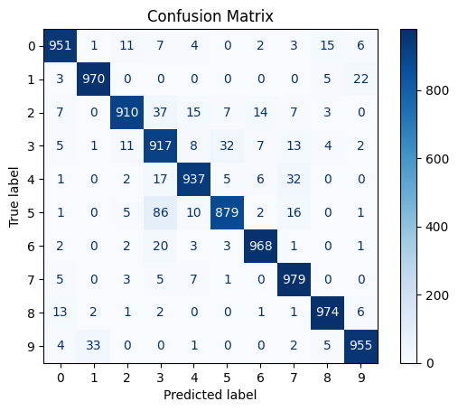

1. Exploratory Data Analysis
Dataset structure
CIFAR-10 provides 60K 32×32 RGB images across 10 classes. Traditional cells split the training set into 90% train / 10% validation, while the deep pipeline uses an 85% / 15% split, keeping the official 10K test set untouched.
- Seeds (RND = 42) ensure reproducible splits via
train_test_splitorrandom_split. - Transforms normalize with ImageNet mean/std before both extraction and training.
- Class balance stays uniform thanks to CIFAR-10's design.
Sample grid

Random batch illustrated in the notebooks' EDA section.
Label distributions
Train

Validation

Test
2. Feature Extraction & Preprocessing
Deep feature backbones
A factory in BTL3_traditional.ipynb selects pretrained models and removes their
heads to yield feature vectors per image.
torchvision: VGG16 (fc6), ResNet50, EfficientNet-B0.timm: ViT-base-patch16-224 and Swin-base-patch4-window7-224 with avg pooling.- Features cached under
features/{model}/{split}_features.npzfor reuse.
Extraction uses build_transform
(resize → tensor → normalize) and dataset_to_dataloader to feed batches through the
chosen extractor.
Scaler + PCA pipeline
fit_scaler_and_pca learns a scaler and optional PCA on the train split, while
transform_with_scaler_pca applies the same to val/test before classifiers consume
the data.
- PCA defaults to 256 components but respects the embedding dimension.
- Widgets allow toggling PCA on/off per run.
- Scaler/PCA artifacts are reused across comparisons to ensure fairness.
3. Traditional Machine Learning Pipeline
Classifier roster & tuning
The traditional notebook trains five classifiers via train_and_evaluate and
optionally fine-tunes their hyperparameters with tune_hyperparameters.
LogisticRegression(saga solver) andLinearSVCtuneC.RandomForestClassifier,KNeighborsClassifier, andMLPClassifierexplore tree depth, neighbors, hidden sizes, and regularization.- Best params cached to
tuned_hyperparams.jsonand reused byrun_comparison. - Final metrics include accuracy, classification reports, and confusion matrices.
Inference time
Scatter plot contrasts classifiers' inference latency with their test accuracy, highlighting the trade-offs in the traditional pipeline.

Comparison results (PCA)
Bar chart showcases classifier accuracy per feature extractor when PCA is enabled.

4. Deep-Learning Pipeline
Preprocessing & training loop
preprocessing(CONFIG) wires resize, random horizontal flips, rotations, tensor
conversion, and normalization; train_and_test(CONFIG) then trains on the configured
number of epochs using AdamW + CrossEntropyLoss.
- Widgets expose resize, batch size, learning rate, and epoch count for interactive experimentation.
- DataLoaders shuffle training data and keep val/test deterministic.
- Training prints epoch loss/accuracy plus final sklearn metrics.
Model options
choose_model(CONFIG) swaps the classification head and uses the following options:
torchvision: modified VGG16, ResNet50, EfficientNet-B0.timm: ViT-base-patch16-224 and Swin-tiny-patch4-window7-224.- Model moves to
device(GPU when available) before training.
EfficientNet-B0 confusion matrix
Confusion matrix derived from the deep-learning pipeline with EfficientNet-B0.

5. Notes & References
- Core feature extraction and traditional comparison logic lives in
BTL3_traditional.ipynb(seerun_pipeline,run_comparison, andtrain_and_evaluate). - Deep training workflow, augmentation, and widget controls are defined in
BTL3_deep_learning.ipynb(train_and_test,preprocessing,choose_model). - All images shown are stored in
docs/assets/assignment3/; the README there explains how to regenerate them. - Tuned parameters and comparison metrics are output to
tuned_hyperparams.jsonandcomparison_results.jsonat the repository root for reproducibility.